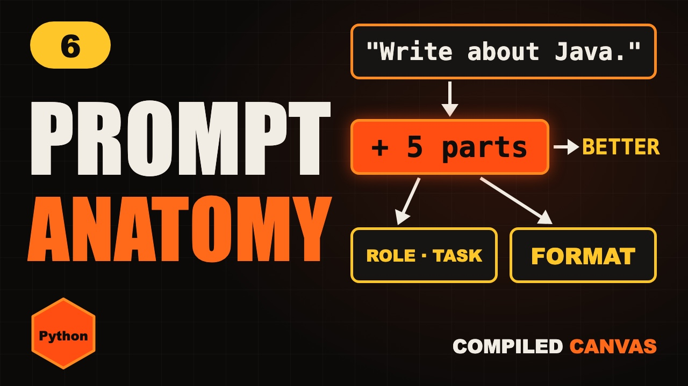

Home / Generative AI / Lesson 6
Lesson 6 · PythonPrompt Anatomy: The 5 Parts of a Great Prompt
How to write a good prompt: the five parts of a great prompt (role, instructions, context, examples and output format), with a prompt builder in Python.

1 hands-on demos and 1 Python programs you can run on this page. Nothing to install.
1Same model, different result
Two people ask the same AI for help with an interview.
One gets a vague, generic answer that helps nobody.
The other gets exactly what they need, in the right format, the first time. The difference isn't the model. It's the prompt.
2Why vague prompts fail
Take this prompt. Write about Java.
What level? How long? For whom? In what format? The model doesn't know, so it guesses.
And when it guesses, you get the most average answer possible. A great prompt removes the guessing.
3The five parts
A great prompt has five parts. Role, instructions, context, examples, and output format.
Part one, the role. Tell it who to be. You are a senior Java interviewer. That sets the tone and the expertise.
Part two, the instructions. Say exactly what to do, with clear verbs. Ask me three questions on hash maps, one at a time.
Part three, the context. The background it can't know. I'm a fresher with six months of Java, interviewing next week.
Part four, examples. Show one sample of what good looks like. The model copies the style. We'll go deeper on this in the next episode.
Part five, the output format. Say exactly how the answer should look. A numbered list, a table, or JSON.
4Before and after
Here's the before. Help me prepare for an interview.
And the after. All five parts, in five short lines. It's longer, but it takes thirty seconds to write.
The first gives you a generic essay. The second gives you a practice interview, at your level, in the shape you wanted.
5A prompt builder in Python
Edit the code and press Run to try it right here, or copy it and run python3 prompt_builder.py.
def build_prompt(role, task, context, example, fmt):
return (f"Role: {role}\n"
f"Task: {task}\n"
f"Context: {context}\n"
f"Example: {example}\n"
f"Format: {fmt}")
print(build_prompt(
"senior Java interviewer",
"ask me 3 HashMap questions",
"I am a fresher, interview next week",
"Q: What is a hash collision?", "numbered list"))Role: senior Java interviewer Task: ask me 3 HashMap questions Context: I am a fresher, ... Example: Q: What is a hash collision? Format: numbered list
In a real app, you don't type prompts by hand every time. You build them in code.
This function takes the five parts, and joins them into one clear prompt, one part per line.
Now every prompt your app sends has all five parts. You can't forget one.
6Mistakes to avoid
Mistake one. Asking for five different things in one prompt. Split big jobs into steps.
Mistake two. Instructions that fight each other. Be brief, and explain everything in detail.
Mistake three. Pasting text with no clear edges. Wrap it in markers, like three quotes, so the model knows where it starts and ends.
Mistake four. Not giving it a way out. Tell it to say I don't know when it isn't sure. That cuts down on made-up answers.
Your turn. Pause. Here's a prompt. Summarise this. Which two parts would you add first?
The output format, like three bullet points. And the context, like who the summary is for.
7Cheat sheet
- Vague in, vague out
- Role: who to be
- Instructions: what to do
- Context: what it can't know
- Examples: show good
- Format: how it looks
- Allow "I don't know"
8Quick quiz
1. Name the five parts of a great prompt.
Role, instructions, context, examples and output format.
2. Reply in JSON is which part?
The output format.
3. Showing one sample answer is which part?
Examples.
9Homework
Your homework. Take a prompt you used this week, and rewrite it with all five parts. Then run the prompt builder from this lesson. All the Python code is on this page, ready to copy. And tell me in the comments: what changed in the answer?